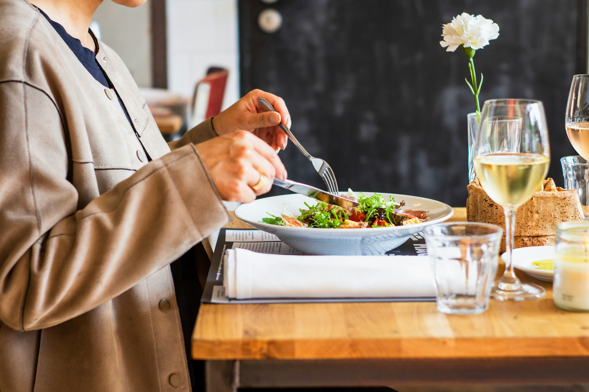
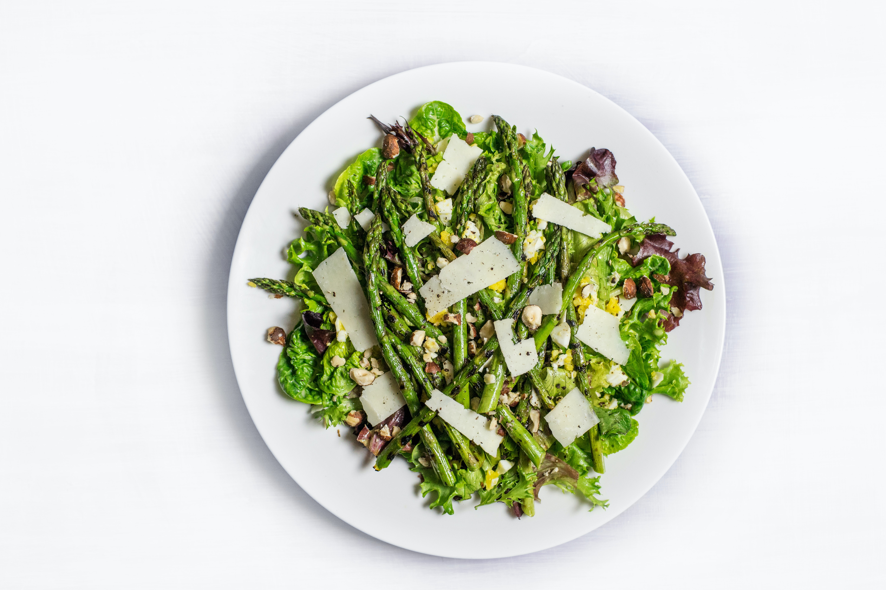
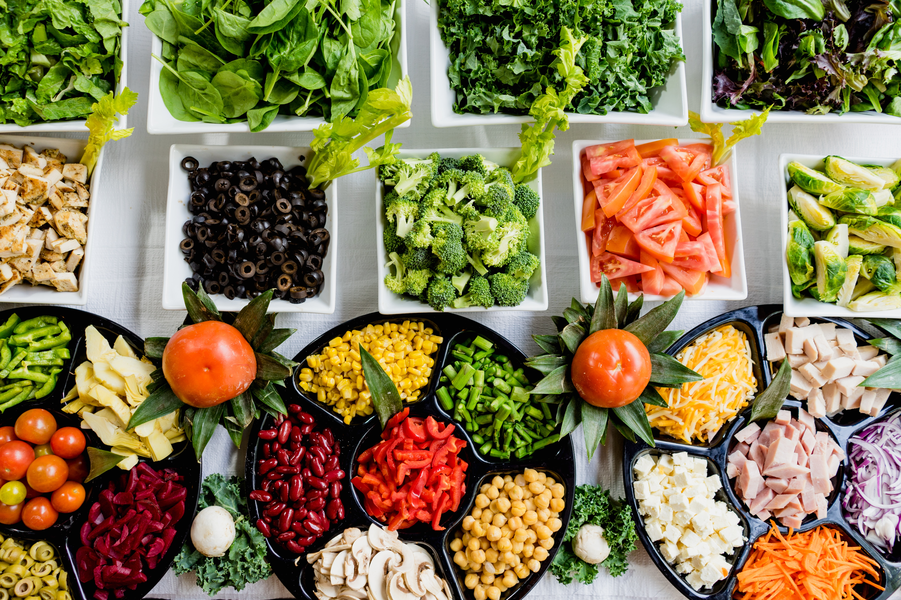

Fresh connections, one salad at a tie.
新鮮なつながりを、ひとつのサラダから
Concept
健康と交流を促進する、サラダをテーマにした交流のかたち
サラダは、栄養価の高い食材を組み合わせた健 康的な食事であり、また、ビジネスや社会人交流の 場での軽食としても人気があります。Salad Meeting では、健康的な食事を通じて、ビジネスや社会人交流 の場を提供し、参加者の健康と交流を促進します。
また、サラダの材料を組み合わせるように様々 な業種や分野の人々が交流し、新しいアイデアやビ ジネスチャンスを生み出す場でもあります。

サラダを提供するビジネスランチイベント
健康的な食事を提供しながら、ビジネスや 社会人交流の場を提供するイベントです。 参加者は、自由にサラダの材料を選び、 オリジナルのサラダを作りながら、楽しく 交流することができます。

サラダに関するイベント情報の提供
サラダに関するイベント情報を提供するサービス です。例えば、サラダのフェスティバルやサラダ のレシピコンテストなど、サラダに関するイベント 情報を提供し、ユーザーが新しいサラダのレシピ を学んだり、サラダに関する情報交換をすること ができます。

サラダレシピの共有プラットフォーム
サラダの作り方や材料の組み合わせなど、サラダ に関する情報を共有するプラットフォームです。 ユーザーは、自分が作ったオリジナルのサラダ レシピを投稿し、他のユーザーと情報を共有する ことができます。
- 会社名
- 株式会社サラダ会議 salad meeting
- 所在地
- 東京都トマト区レタス南3丁目
- 設立
- 2023年7月6日
- 代表者名
- 更田 沙羅 🥗